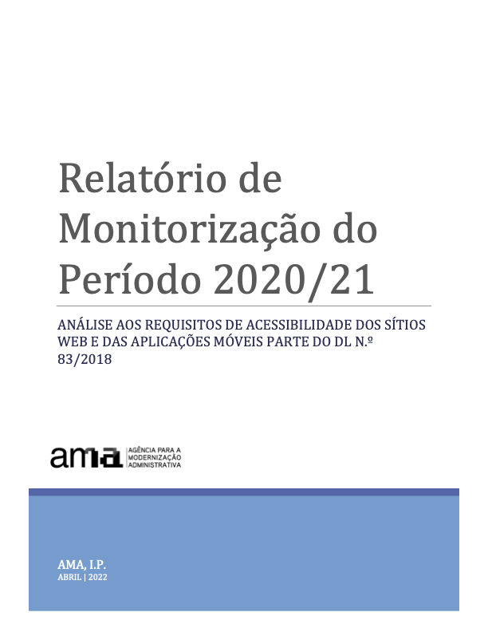

Você está aqui:
If you are looking for the english version consult: Report on the 2020/21 Monitoring Period: analysis of accessibility requirements of websites and mobile applications part of DL 83/2018
Versão HTML do Relatório
-
AMA, I.P. & FCUL. (abril 2022). Relatório do período de monitorização 2020/21: análise aos requisitos de acessibilidade dos sítios Web e das aplicações móveis parte do DL n.º 83/2018. Lisboa: Equipa de Acessibilidade Digital da Agência para a Modernização Administrativa, I.P. (EAD/AMA) e do LASIGE – Computer Science and Engineering Research Centre da Faculdade de Ciências da Universidade de Lisboa (LASIGE/FCUL).
Outros formatos
Dados de medição recolhidos
- Monitorização de sítios Web (monitorização simplificada)
- Dados individuais recolhidos para a monitorização simplificada (amostra 2k) em formato CSV (zip, 56,5MB)
- Dados individuais recolhidos para a monitorização simplificada (amostra Home+) em formato CSV (zip, 5,4MB)
- Métricas globais recolhidas para a monitorização simplificada (amostra 2k) em formato JSON (zip, 14KB)
- Métricas globais recolhidas para a monitorização simplificada (amostra Home+) em formato JSON (zip, 14KB)
- Monitorização de sítios Web (monitorização aprofundada)
- Monitorização de aplicações móveis
Sumário Executivo
No âmbito do DL n.º 83/2018, de 19 de outubro, que define os requisitos de acessibilidade dos sítios web e das aplicações móveis, compete à Agência para a Modernização Administrativa, I.P. (AMA), apresentar à Comissão Europeia, de três em três anos, um relatório sobre o resultado da monitorização efetuada, incluindo os dados de medição. O presente documento contém os resultados e os dados de medição relativos ao 1º período de monitorização compreendido entre 2020 e 2021.
Para a realização da análise deste 1º período de monitorização foram selecionados, de acordo com a metodologia proposta pela Decisão de Execução (UE) 2018/1524, 281 sítios Web e 16 aplicações móveis. Os sítios Web foram alvo de dois tipos de monitorização: monitorização simplificada e monitorização aprofundada. A primeira baseia-se, no essencial, em fazer passar por uma amostra de páginas um validador automático. A segunda consiste numa validação humana manual feita por um perito de acessibilidade. As aplicações móveis foram sujeitas apenas a uma monitorização do tipo aprofundada.
Na seleção da amostra de sítios Web levou-se em linha de conta o critério geográfico (central, regional e local) mas também o tipo de serviço, a procura do mesmo e o sector de atividade. Quer a amostra de sítios Web quer a amostra de aplicações móveis foram submetidas para apreciação às organizações representantes de pessoas com deficiência por via da Comissão de Políticas de Inclusão coordenada pela Secretaria de Estado para a Inclusão das pessoas com deficiência.
Nota: caso não consiga consultar, por qualquer razão, o gráfico seguinte, veja os dados na Tabela 02.

Sítios Web
Nota: caso não consiga consultar, por qualquer razão, o gráfico seguinte, veja os dados na Tabela 41.

No caso da presente análise, usámos duas composições de amostras para submeter aos validadores automáticos: uma com menos páginas e outra com mais páginas. A primeira baseada no método que a AMA, I.P. está a usar no Observatório Português da Acessibilidade Web, que consiste numa amostra composta pela 1ª página mais todas as páginas hiperligadas à primeira pertencentes ao domínio, a que designámos de Home+ (H+). A segunda, a que designámos de 2K por ser composta por uma recolha com vários níveis de profundidade até ao máximo de 2 mil páginas. Em média, a Home+ produziu amostras com uma média de 80 páginas por sítio Web enquanto a 2K produziu amostras de 1000 páginas em média por sítio Web.
No essencial queríamos responder à questão: será a amostra Home+ suficientemente representativa ou teremos que aumentar o número de páginas que estamos a usar no Observatório? Ao analisar o Gráfico 2 que nos mostra as taxas médias de não conformidade das cláusulas da Norma Europeia que compõem cada princípio de acessibilidade, constatamos que as taxas de não conformidade para os 4 princípios seguem tendências semelhantes em ambas as amostras analisadas automaticamente (i.e. H+ e 2K).
Outra das interrogações à partida estava relacionada com o efeito nos resultados provocado por uma validação pericial (monitorização aprofundada). Até que ponto a monitorização aprofundada corrobora ou não os resultados das duas análises feitas exclusivamente com validadores automáticos (monitorização simplificada)? Pela análise do Gráfico 2 percebe-se que os princípios com os melhores e os piores estados de conformidade na monitorização simplificada são também os piores e os melhores na monitorização aprofundada, mas o cenário encontrado pela monitorização aprofundada é, em média, uma vez e meia pior do que o revelado pela monitorização simplificada. Para o princípio “Compreensível”, a monitorização aprofundada chega mesmo a revelar um panorama três vezes pior ao encontrado pela monitorização simplificada. Isto espelha bem a importância de se efetuarem avaliações manuais periciais. Há, no entanto, um aspeto em que os dois métodos de avaliação concordam. Quando observadas as taxas de não conformidade por cada um dos 4 princípios de acessibilidade Web enumerados pelo W3C, ambos os métodos apontam o princípio “Percetível” e o princípio “Robusto” como sendo os que têm taxas de não conformidade maiores – na ordem dos 78% e dos 94%, respetivamente. É também de salientar que os cenários encontrados pelas avaliações automática e manual nestes dois princípios distam apenas 10%, o que nos leva a concluir o bom trabalho das ferramentas automáticas na deteção de não conformidades nos princípios de acessibilidade “Percetível” e “Robusto”.
A monitorização aprofundada é mais eficaz na deteção dos níveis de conformidade do que a monitorização simplificada, contudo ela é mais consumidora de recursos de análise e de tempo. Por essa razão, ela é aplicada a um número reduzido de páginas. Na presente análise a monitorização simplificada foi efetuada a um universo de 281.706 páginas (amostra 2K) e 19.931 (amostra Home+). Já a monitorização aprofundada foi aplicada a um universo de 477 páginas.
Aplicações móveis
A seleção das aplicações móveis recaiu sobre 8 aplicações que compunham o top das aplicações mais usadas, presentes no catálogo https://www.app.gov.pt, na sua versão iOS e na sua versão Android, perfazendo, na prática, um total de 16 aplicações – está comprovado que uma mesma aplicação para versão iOS e para versão Android requer, em termos de acessibilidade, duas análises independentes. Foram analisados 144 ecrãs, numa média de 9 ecrãs por aplicação. A taxa média de não conformidade foi de 51% para as aplicações iOS e de 53% para as aplicações Android, não permitindo assim dizer-se com clareza que as aplicações de uma dada versão estão melhores do que as outras. No princípio de acessibilidade “Robusto”, a taxa média de não conformidade por versão é igual – i.e. 87,5%. As aplicações iOS apresentam-se melhores nos princípios “Operável” e “Compreensível”, mas, no princípio “Percetível”, as aplicações Android apresentam-se ligeiramente melhores às de iOS.
Dos 4 princípios de acessibilidade, os que se apresentam com os maiores níveis de não conformidade são o “Percetível” e o “Robusto”. O “Percetível” é muito penalizador, por exemplo, de utilizadores com deficiência visual (pessoas cegas ou com baixa visão), e de pessoas surdas. Já o “Robusto” penaliza todos os utilizadores que fazem uso de tecnologias para transformar a informação às suas capacidades de leitura e navegação. Tecnologias de apoio – leitores de ecrã com sintetizador de fala ou linha braille, usadas por pessoas cegas – mas também, globalmente, qualquer tecnologia de indexação ou de visualização que necessitem de interoperar com a informação. O princípio “Percetível” aparece com taxas de não conformidade na ordem dos 65%. Já o princípio “Robusto” surge com taxas de não conformidade muito elevadas, na ordem dos 90%.
Nota: caso não consiga consultar, por qualquer razão, o gráfico seguinte, veja os dados na Tabela 42.

Sítios e Apps
Os 4 princípios de acessibilidade são afetados da mesma forma nos sítios Web e nas aplicações móveis – os melhores coincidem com os melhores e os piores com os piores. No entanto, as aplicações móveis apresentam-se sempre melhores que os sítios Web, em todos os 4 princípios – em média 10 pontos percentuais acima dos sítios Web. O princípio “Robusto” apresenta-se com taxas de não conformidade na ordem dos 90%, seguido do princípio “Percetível” com valores na ordem dos 70%. Já os princípios “Compreensível” e “Operável” apresentam taxas de não conformidade bastante mais baixas, respetivamente na ordem dos 15% e 40% para o caso das aplicações e de 30% e 50% para os sítios Web.
Nota: caso não consiga consultar, por qualquer razão, o gráfico seguinte, veja os dados na Tabela 43.

Utilizadores e principais problemas
Quais são os utilizadores que se confrontam com um maior número de barreiras? Na Norma Europeia EN 301 549 é feita uma relação entre as cláusulas que representam as boas práticas de acessibilidade a aplicar e os utilizadores beneficiários dessas práticas a que se dá o nome de Declarações de Desempenho Funcional. Este nome mais elaborado prende-se com o facto de, ao referir, por exemplo, “Utilização na ausência de visão”, se pretende fazer alusão não apenas a pessoas com deficiência da visão, mas a todas as pessoas que, numa determinada situação, estão impossibilitadas ou limitadas na utilização da visão – p.e. alguém que, devido à luz solar intensa de um dia de Verão não consegue, ou tem maior dificuldade, em usar um smartphone na rua.
Assim, os dados recolhidos (ver Gráfico 5) dizem-nos que a presente amostra tem não conformidades nas cláusulas que afetam em primeira linha a: “Utilização com visão limitada” (46% de não conformidades); “Utilização na ausência da perceção da cor” (45%) e “Utilização na ausência da visão” (41%). “Utilização com capacidade de manipulação e/ou força limitada”, “Utilização com capacidades cognitivas limitadas”, “Utilização na ausência de audição” surgem com taxas médias de não conformidade entre os 30% e os 40%.
Nota: caso não consiga consultar, por qualquer razão, o gráfico seguinte, veja os dados na Tabela 44.

Da análise efetuada aos sítios Web e às aplicações móveis foram detetadas, independentemente do tamanho da amostra e independentemente do método de monitorização utilizado, elevadas taxas de não conformidade nos princípios “Percetível” e “Robusto” entre os 80% e os quase 100% – 97% de não conformidade do princípio “Robusto” na monitorização aprofundada de sítios Web.
Não é, por isso, de estranhar que as 11 cláusulas com maior taxa de falha nos sítios Web na monitorização aprofundada tenham sido:
- 9.1.1.1 Conteúdo não textual, com uma taxa de falha de 100% face aos sítios web aplicáveis;
- 9.1.2.1 Apenas áudio e apenas vídeo (pré-gravado), com uma taxa de falha de 100% face aos sítios web aplicáveis;
- 9.1.2.2 Legendas (pré-gravadas), com uma taxa de falha de 100% face aos sítios web aplicáveis;
- 9.1.2.3 Audiodescrição ou alternativa em multimédia (pré-gravada), com uma taxa de falha de 100% face aos sítios web aplicáveis;
- 9.1.2.5 Audiodescrição (pré-gravada), com uma taxa de falha de 100% face aos sítios web aplicáveis;
- 9.1.3.1 Informações e relações, com uma taxa de falha de 100% face aos sítios web aplicáveis;
- 9.1.4.2 Controlo de áudio, com uma taxa de falha de 100% face aos sítios web aplicáveis;
- 9.4.1.1 Análise sintática (parsing), com uma taxa de falha de 100% face aos sítios web aplicáveis;
- 9.1.4.10 Re-alinhar, com uma taxa de falha de 96% face aos sítios web aplicáveis;
- 9.2.4.4 Finalidade da hiperligação (em contexto), com uma taxa de falha de 96% face aos sítios web aplicáveis; e
- 9.4.1.2 Nome, função, valor, com uma taxa de falha de 96% face aos sítios web aplicáveis.
Deste grupo de 11 cláusulas, 8 fazem parte do princípio “Percetível”, onde está a utilização dependente da visão e também da audição, 2 para o princípio “Robusto”, onde está a interoperabilidade com as tecnologias de apoio e 1 para o princípio “Operável” onde está a manipulação das interfaces digitais com tecnologias alternativas ao rato como é o caso do teclado e de todos os emuladores dos mesmos.
É igualmente interessante analisar a distribuição das cláusulas da EN 30 15 49 pelos níveis “A” e “AA” das WCAG 2.1. Embora a Norma Europeia não faça esta distinção, considerando todas as cláusulas por igual, a distribuição pode facilitar quem tem pela frente a tarefa de correção dos problemas encontrados. Diz o W3C que os problemas de nível “A” afetam mais pessoas e que é um bom ponto de partida começar o trabalho de retificação por aí. Assim puxamos para este sumário executivo (ver gráfico abaixo) o Gráfico 13 que nos mostra as cláusulas de nível ‘A’ que foram alvo de análise no presente estudo. Consulte também o Gráfico 14 para as cláusulas de nível ‘AA’.
Nota: caso não consiga consultar, por qualquer razão, o gráfico seguinte, veja os dados na Tabela 32.

O gráfico acima mostra-nos um cenário em que é possível verificar as taxas médias de não conformidade das cláusulas de acessibilidade. As taxas de não conformidade mais elevadas ocupam as posições mais à esquerda no gráfico de barras e é possível percecionar de forma imediata que a não conformidade afeta 30% a 40% do total das cláusulas aplicáveis. Por oposição percebe-se que 60% a 70% das cláusulas estão conformes ou não se aplicam. Este tipo de dados revela com maior clareza o trabalho que é necessário empreender. Os dados recolhidos pelo validador de acessibilidade Web AccessMonitor também nos deixaram uma pista positiva, ao ter encontrado 78% dos sítios com um índice AccessMonitor superior a 5 (isto numa escala de 0 a 10, em que 10 corresponde a boas práticas de acessibilidade).
Resultados semelhantes foram observados nas 24 aplicações móveis. Problemas com:
- 11.1.4.4 Redimensionar texto – 16 aplicações (100%)
- 11.1.3.4 Orientação – 15 aplicações (93.75%)
- 11.2.4.4 Finalidade da hiperligação (em contexto) – 14 aplicações (87.5%)
- 11.4.1.2 Nome, função, valor – 14 aplicações (87.5%)
- 11.1.3.1 Informações e relações – 13 aplicações (81.25%)
Mais uma vez estamos a falar de cláusulas que estão por detrás do princípio “Percetível” (3 cláusulas), Robusto (1) e Operável (1).
Declarações de Acessibilidade
Nos 281 sítios Web analisados, foram encontradas declarações de acessibilidade em 13, o que corresponde a 4.6% da amostra. No entanto, foram identificados 29 outros sítios web com uma página relativa à acessibilidade, mas que não correspondia a uma declaração construída de acordo com o modelo proposto no Decreto-lei n.º 83/2018. Se as entidades a quem pertencem estes sítios Web corrigirem as suas declarações, passaremos a ter, no curto prazo, 15% de sítios Web com Declaração de Acessibilidade.
Índice do relatório
- Sumário Executivo
- Sítios Web
- Aplicações móveis
- Sítios e Apps
- Utilizadores e principais problemas
- Declarações de Acessibilidade
- Parte I – Descrição das atividades de monitorização
- Informações gerais
- Composição da amostra
- Amostra de sítios Web para o método de monitorização simplificada
- Amostra de sítios Web para o método de monitorização aprofundada
- Amostra de aplicações móveis para o método de monitorização aprofundada
- Correlação com as normas, as especificações técnicas e as ferramentas utilizadas para monitorização
- Metodologia aplicada na monitorização simplificada de sítios Web
- Metodologia aplicada na monitorização aprofundada de sítios Web
- Metodologia aplicada na monitorização aprofundada de aplicações móveis
- Parte II – Resultados da monitorização
- Resultados pormenorizados
- Monitorização simplificada de sítios web
- Análise da amostra Home+
- Distribuição das cláusulas EN 301 549 (H+)
- Distribuição das Declarações de Desempenho Funcional EN 301 549 (H+)
- Distribuição dos testes AccessMonitor e das regras ACT por sítio web (H+)
- Distribuição dos testes AccessMonitor e das regras ACT por página web (H+)
- Distribuição de pontuações AccessMonitor (H+)
- Análise da amostra 2K
- Distribuição das cláusulas EN 301 549 (2K)
- Distribuição das Declarações de Desempenho Funcional EN 301 549 (2K)
- Distribuição dos testes AccessMonitor e das regras ACT por sítio web (2K)
- Distribuição dos testes AccessMonitor e das regras ACT por página web (2K)
- Distribuição de pontuações AccessMonitor (2K)
- Análise dos resultados da monitorização simplificada de sítios web
- Análise da amostra Home+
- Monitorização aprofundada de sítios web
- Distribuição das cláusulas EN 301 549 por sítio web
- Distribuição das Declarações de Desempenho Funcional EN 301 549
- Análise dos resultados da monitorização aprofundada de sítios web
- Monitorização aprofundada de aplicações móveis
- Resultados por cláusula EN 301 549 das aplicações móveis
- Análise dos resultados da monitorização aprofundada de aplicações móveis
- Monitorização simplificada de sítios web
- Conteúdo complementar
- Resultados dos testes de usabilidade com utilizadores com deficiência
- Testes de usabilidade com sítios web
- Testes de usabilidade com aplicações móveis
- Comparação entre os resultados da monitorização simplificada e aprofundada de sítios web
- Acessibilidade das aplicações móveis por sistema operativo
- Informação relativa a declarações de acessibilidade
- Utilização do procedimento de execução e comentários dos utilizadores finais
- Conteúdo relacionado com medidas adicionais
- Resultados dos testes de usabilidade com utilizadores com deficiência
- Resultados pormenorizados
- Anexos
- Tabelas de suporte ao sumário executivo
- Lista de sítios web da amostra para monitorização simplificada
- Lista de sítios web da amostra para monitorização aprofundada
- Lista de aplicações móveis da amostra para monitorização aprofundada
- Lista de testes WCAG 2.1 complementares da metodologia Trusted Tester
- Não restringir a orientação do dispositivo
- Identificar Propósito de Entrada
- Realinhar
- Contraste de componentes ativos
- Contraste de objetos gráficos
- Espaçamento de Texto
- Conteúdo on Hover ou Foco
- Atalhos
- Apontadores e Movimento
- Etiquetas no Nome
Ficha Técnica
Título
Relatório de monitorização do período 2020/21: análise aos requisitos de acessibilidade dos sítios Web e das aplicações móveis parte do DL n.º 83/2018
Ano
2022
Editor
AMA – Agência para a Modernização Administrativa, I.P.
Direção de Estratégia e Governo Digital / Equipa de Acessibilidade Digital
Produção
Uma produção da Equipa de Acessibilidade Digital da Agência para a Modernização Administrativa, I.P. (EAD/AMA) e do LASIGE – Computer Science and Engineering Research Centre da Faculdade de Ciências da Universidade de Lisboa (FCUL).

Partilhar